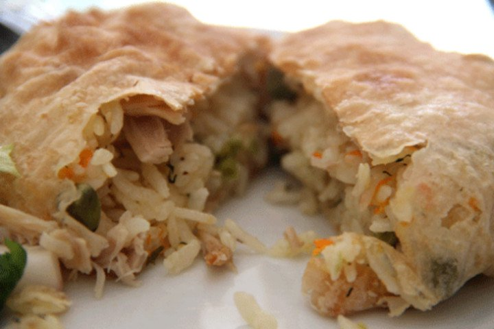
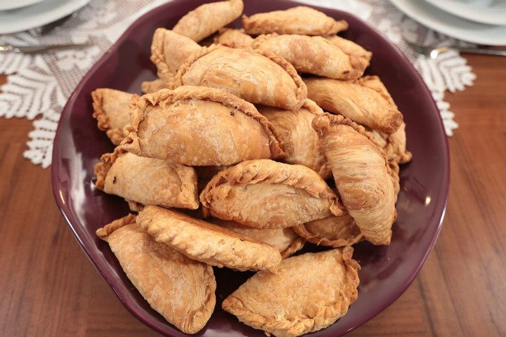
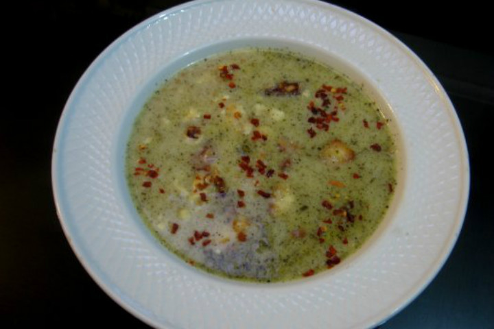
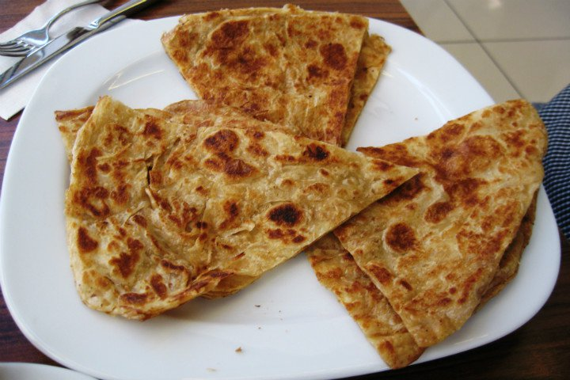

Balaban köfte
One of the most famous and delicious dishes of the city is balaban köfte, pancakes cut in tiny squares with bones of water, a tomato sauce, yoghurt and butter on top, and finally grill panes.

Yufkalı büryan
The wonderful flavor of rice and spices, which is boiled with bones and then separated from its bones, is stored in the dough that is made into flour and sent to the journey of the fir. A hoofed broom, a hidden paradise for palms, turns like a pomegranate and turns into a full feast when it leaves the stove. It is my pleasure not to touch you when you open a delicious ayran.

Çibörek
Although it is known as "çiğbörek" in general, this flavor, which is actually called "çibörek", is the most beautiful contribution of Crimean Tatars to Eskişehir. The combination of onion, mincemeat and various spices is the result of the delicious meeting of the paste with the dough. Almost every restaurant in Eskişehir offers different kinds of ribs with different materials. We strongly recommend using it with yogurt or salted sauces.

Kıygaşa
Eskişehir'da typical dishes, the polish is actually very similar. However, a different kind of donut is added to the dough. In general, the taste made without putting something in it is turned into a more exquisite one, filled with minced meat in some places.

Kavurma börek
The roasted pie, which is placed between the Tatar cuisine and the meals of Eskişehir, is made by adding to the dough prepared by roasting in minced meat and rice oil. The single-ply stuffed dough, opened in half circles, is cooked in the oven.

Göceli tarhana
There is no such thing in this tarhaman built with a paddock that is peeled and crushed wheat. Green lentils, chickpeas and yoghurt, such as healthy and nutritious materials made from each other, this dish is not missing in the sea to drink a plate from the stomach does not satisfy the sick, not healing is not found until today.

Haşhaşlı gözleme
Especially populous pancakes from the most delicious ways that tourists who come to town can suppress their hunger during the trip. It is enriched by spreading layers of yufkalar, oil and poppy which should not open very thinly. Then cooked. If you find obsolete observations that are cooked in the earth sact, you will not be able to stop eating until your stomach is full.

Met helvası
The main ingredients are flour, sugar, lemon, oil and water, the most famous of the city. It is very difficult to make this delicious dessert which is enriched with various nuts or cocoa. That's why it would be good to get it from the places where real masters work instead of doing it at home for a good meal.

<
Previous Page |
Next Page |